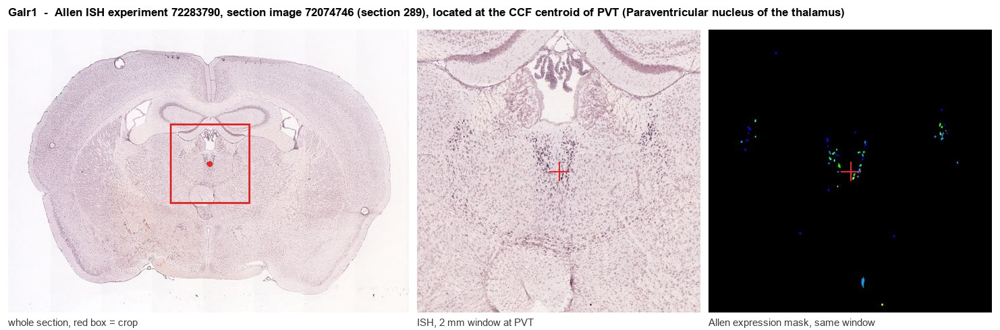
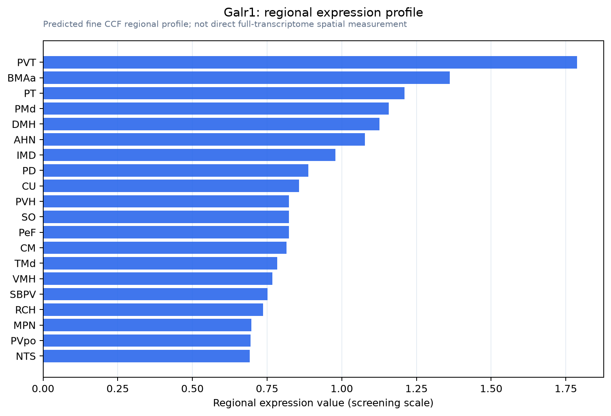

Galr1
Galanin receptor type 1 (GAL1-R) (GALR-1)
Spatial tier: REGION_BIASED · Class: GPCR · Top region: PVT (Paraventricular nucleus of the thalamus) · Positive regions: 42/554
43.8Discovery Score
39.7Targetability Score
CEvidence grade C
What this means: Galr1: fine CCF profile is region-biased toward PVT (top regions: PVT, BMAa, PT, PMd, DMH); this is a discovery lead, not direct proof.
Function in PVT: evidence, prediction, innovation
- Gene function
- GALR1 is the type 1 galanin receptor, a Gi/o-coupled GPCR. Galanin binding inhibits adenylyl cyclase, opens GIRK potassium channels and closes voltage-gated calcium channels, so GALR1 activation is generally inhibitory and hyperpolarising; the galanin system modulates arousal, mood, feeding and nociception.
- Region function
- The paraventricular nucleus of the thalamus is a midline thalamic hub that integrates hypothalamic and brainstem state signals and projects to nucleus accumbens, prefrontal cortex, amygdala and BNST, controlling arousal, stress responses, salience and appetitive/aversive motivation.
- Published in this region
- inferred No region-specific literature found for GALR1 function in PVT. Kerr 2015 generated fluorescently tagged GalR1 knock-in mice that map receptor protein across the brain, and Hevesi 2024 showed galanin transiently expressed in ventrobasal thalamus shapes thalamic circuit wiring, establishing that thalamic neurons are galanin targets during development.
- Predicted function
- Prediction: GALR1 gives PVT neurons a Gi/GIRK brake through which galanin, released by hypothalamic and locus-coeruleus afferents, can suppress the wake- and stress-promoting PVT output to accumbens and BNST. Local galanin or a GALR1 agonist (M617) should hyperpolarise PVT neurons and reduce arousal, cue-evoked salience responses and stress-induced reinstatement, while Galr1 knockdown in PVT is predicted to increase wakefulness and exaggerate stress- and food-cue-driven behaviour.
- Innovation
- ★★★★☆ 4/5 PVT is intensively studied for arousal and salience, yet galanin signalling there has been left aside despite good receptor tools.
- Tools
- GalR1 knock-in reporter mice (Kerr 2015) and Galr1 knockout mice; agonist M617 and galanin(1-15); antagonist M40; Galr1-Cre lines; PVT access via Gal-Cre afferent labelling and stereotaxic AAV.
- References
Direct evidence located at the region

Allen ISH experiment 72283790, section image 72074746 (section 289): the section that contains the CCF centroid of Paraventricular nucleus of the thalamus according to the Allen image-to-atlas alignment (reference_to_image), with a 2 mm window around that point. Left: whole section, red box = window. Middle: ISH signal. Right: Allen's expression-mask view of the same window. open this image in the Allen viewer
Look it up yourself: Allen Mouse Brain ISH for Galr1Allen reference atlas: PVT (structure 149)ABC Atlas MERFISH viewer(in the ABC Atlas choose dataset MERFISH-C57BL6J-638850-CCF, colour cells by gene "Galr1" or by parcellation_substructure "PVT")All genes confined to PVT + 3-D brain
Direct spatial evidence
MERFISH REGION LOCATOR

Regional expression figure

Predicted WMB × fine-CCF profile; not direct full-transcriptome spatial measurement.
Spatial profile
Evidence and specificity
- Evidence status
- PREDICTED_FINE
- Direct sources
- None; predicted localization only
- Exclusive threshold
- 12 positive regions out of 554
- Spatial specificity
- 0.296
- Top-region fraction
- 0.045
- Filter status
- PASS
Interpretation limits
- Cell-type-to-region projection is imputed expression, not direct spatial measurement.
- Adult reference atlases do not establish stability across age, sex, strain, state, or disease.
- Transcript abundance does not guarantee protein abundance or genetic-tool performance.